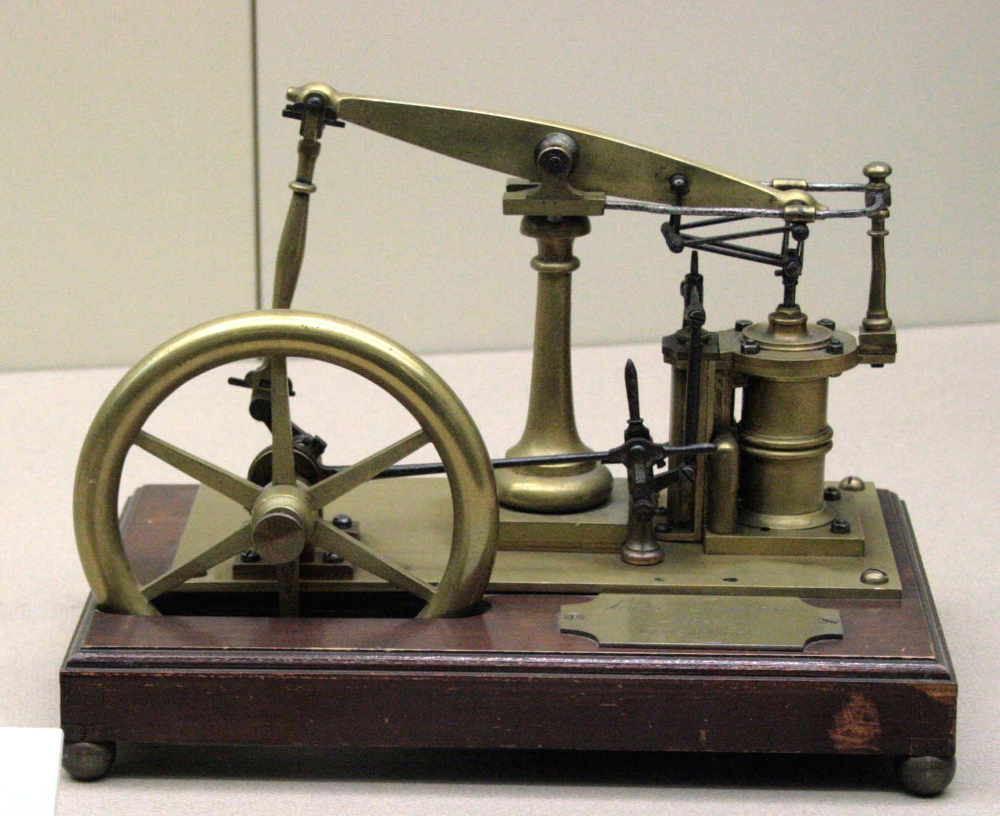
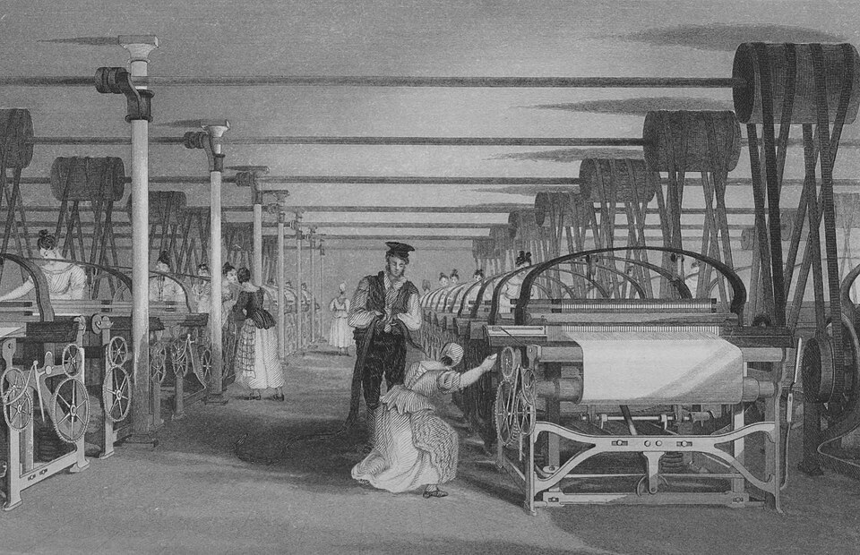

Industrial Revolution
Steam, Steel & the Machine — The World Transformed Forever
1760 – 1840 · Britain to the World
1000x
Productivity Increase (textiles)
38,000km
British Rail by 1900
50%
Britain Urbanized by 1850
GDP x10
British GDP 1700–1850
Revolutionary Inventions

Steam Engine
James Watt, 1769 · Power Everything
Watt's improved steam engine converted heat to mechanical work with unprecedented efficiency. The Boulton & Watt engine powered mines, mills, and factories — then locomotives and ships. It was the most transformative machine in human history.

Spinning Jenny
James Hargreaves, 1764 · Textile Revolution
A multi-spindle spinning frame that could spin 8 threads simultaneously (later 80+). Combined with the water frame and power loom, it ended cottage industry and created the modern factory. Britain produced 40% of the world's cotton cloth by 1850.
Steam Locomotive
George Stephenson, 1825 · Rails Change Everything
The Stockton and Darlington Railway (1825) was the world's first public steam railway. Stephenson's Rocket set a speed record of 47km/h in 1829. Railways shrunk distances, moved goods cheaply, and created the first truly national economies.
Telegraph
Samuel Morse, 1837 · Instant Communication
The first technology that separated communication from transportation. Messages that took weeks now arrived in seconds. The transatlantic telegraph cable (1866) unified the world's markets. Morse code remained in use until 1999.
Bessemer Process
Henry Bessemer, 1856 · Age of Steel
Mass-produced steel for the first time by blowing air through molten pig iron. Reduced steel costs by 80%. Enabled steel rails (replacing iron), steel-framed buildings (skyscrapers), and steel ships — the backbone of the Second Industrial Revolution.

Power Loom
Edmund Cartwright, 1785 · Factory System
Mechanized weaving that could produce cloth 40x faster than hand-looms. Its adoption created the factory system — concentrated production in mills, urbanized the working class, and directly inspired Karl Marx's analysis of industrial capitalism.